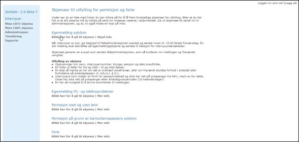
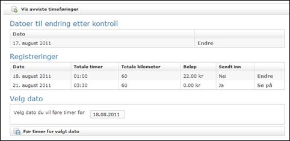

SivAdmin
Brukerveiledning for intervjuerne
Versjon 1.0
August 2011
Egenmelding PC- og telefonproblemer
Permisjon pga. barns/barnepassers sykdom
Føring av timer, kjørebok og utlegg
Oversikt måned og valg av dato
Dagsoversikt timer, kjørebok og utlegg
Endring av timeføring, kjørebok og utlegg etter kontroll
Avviste timeføringer, kjørebok og utlegg
Innhold
Dette dokumentet er en enkel brukerveiledning for funksjonaliteten til brukere med rollen Intervjuer i SivAdmin (System for intervjuvirksomhet administrasjons applikasjon). Dokumentet tar for seg innlogging, CATI intervjuing, CAPI intervjuing, egenmeldinger pga. sykdom, ferie osv. og føring av timer, utlegg og kjørebok.
Innlogging
For å starte SivAdmin må du først klikke på snarveien ”sivadmin” i START-menyen. Deretter vil følgende skjermbilde for innlogging vises:
I feltet ”NetID”
skrives dine initialer inn (tre bokstaver). I feltet ”Password” skrives ditt
vanlige nettverkspassord inn. Klikk så
på knappen ”LOGIN”, eller trykk bare på ENTER-tasten.
Legg spesielt merke
til at det kun skal være en aktiv arkfane som heter ”CAS Control Authentication
Service” åpen ved pålogging. Dvs slik som ovenfor.
Hvis du opplever
lang svartid med timeglass ved innlogging bør du sjekke om du har flere
arkfaner oppe.
Det skal ikke være
slik som i dette eksempelet:
For å rydde opp i
dette innloggingsbildet må følgende gjøres:
- Klikk på rødt kryss i høyre hjørnet på alle arkfanene (unntatt det ene som blir igjen
helt til venstre) slik at disse blir lukket.
- Lukk skjermbildet du har oppe for
pålogging til sivadmin
- Start SivAdmin på nytt
Hvis du ved avlogging av Citrix får spørsmål
om du vil at Firefox skal lagre fanene til neste gang du starter velger du
alternativet "Avslutt", ikke velg alternativet "Lagre og
avslutt".
Hvis innloggingen er vellykket kommer man til SivAdmin’s velkomstside, se bildet under.
Øverst til høyre i bildet ser man hvilken bruker man er logget på med og en link for utlogging. Til venstre i bildet er menyen med de funksjonene som er tilgjengelig for rollen intervjuer i SivAdmin. Disse funksjonene er forklart nærmere i kapitlene under. Det er ennå ingen rapporter tilgjengelig, så denne meny knappen/linken er inaktiv inntil det foreligger rapporter.
Mine CATI-skjema
Her kan man se hvilke telefonundersøkelser (CATI) man er tilordnet i en liste og se status på disse. Det er også linker for å åpne Blaise for intervjuing, testing eller øving for det aktuelle skjema. Bildet under viser hvordan siden ser ut for en intervjuer med et skjema tilordnet.
Feltet ”Blaise ok” er merket rødt hvis skjemaet ved aktuell undersøkelse ikke er klart til bruk. Når denne firkanten har fargen grønn er skjemaet klart til bruk.
Feltet ”Øv på intervju” må man alltid inn på før faktisk intervjuing skal foretas. Dette for å øve på skjemaet og lese instruks. Når det er gjort må det hakes av for at:
”Jeg har lest retningslinjer og øvd på skjema”, og så velge ”Bekreft”. Dette betyr at du nå har bekreftet at du har trent og gjort deg kjent med skjemaet og i tillegg lest og forstått instruksen/retningslinjene ved undersøkelsen. Dette må gjøres ved hver ny undersøkelse. Nå skal knappen ”Start intervju” være klikkbar og intervjuing kan gjennomføres.
Knappen ”Test intervju” brukes av utvalgte medarbeidere og intervjuere før produksjonssetting for å teste skjemaet.
Mine CAPI-skjema
På denne siden kan man se hvilke besøksundersøkelser(CAPI) man er tilordnet, hvor mange IO man er tilordnet og synkronisere skjema og IO.
For å få installert
skjema, overført dine tildelte IO og returnert dine ferdige IO til oss gjør som
følger:
·
Klikk på
knappen: ”Synkroniser skjema og data” (en blå avlang knapp) og VENT en stund
·
Under
synkroniseringen vil det vises noen meldinger på skjermen, og når alle disse meldingene
er borte er synkroniseringen ferdig
· Når synkroniseringa er ferdig må du klikke på ”Mine CAPI-skjema” på høyre side på nytt igjen, slik at informasjonen på siden om antall IO tilordnet etc blir oppdatert
For å se hvilke intervjuobjekter man er tilordnet for et gitt skjema klikker man på linken ”Vis intervjuobjekter” i raden for det aktuelle skjemaet og siden med oversikt over intervjuobjekter vises, se bilde under.
Hvis
synkroniseringen gikk bra skal skjema og tildelte IO være tilgjengelig lokalt
på PC’en din. Returnerte IO skal nå være fjernet fra din IO-liste lokalt på
PCen. For å få frem det som nå er
installert:
·
Gå til grønn
Start-meny knapp (ikke Citrix) og velg snarveien ”SIV-CAPI”. Ikonet
”SIV-CAPI” kan også ligge på ditt skrivebord lokalt.
·
Nå skal
administrasjonsprogrammet for CAPI starte. Dette er ganske likt det som vi
tidligere hadde i CAI, for de som har erfaring fra det.
Nedenfor er det et
eksempel på hvordan skjermbildet for IO-lista ved SIV-CAPI ser ut. Her vil IO-ene
du har fått tildelt ligge når de har blitt synkronisert inn på din PC lokalt:
Klikk på ønsket IO i
lista eller bruk knappen ”All informasjon” for mer informasjon og videre behandling.
I det skjermbildet du nå får opp er det i tillegg til mye register- og
statusinformasjon om IO også funksjonsknapper for ”Skjema” (åpne
Blaiseskjemaet), ”Avtale” (lage avtale), ”IO-liste” etc.
For å få returnert
dine IO til oss senere må du inn i SivAdmin, velge ”Mine CAPI-skjema” og
deretter klikke på den blå knappen ”Synkroniser skjema og data”.
NB: Det er viktig å merke seg at Blaise ikke må være aktiv/oppe når synkronisering skal kjøres, fordi synkroniseringen da vil feile. Har du et vindu oppe som heter ”Blaise 4.8 Manipula”, så avslutt dette først.
Administrasjon
Under administrasjon kan man fylle ut skjema for å registrere følgende:
- Egenmelding sykdom
- Egenmelding PC- og telefonproblemer
- Permisjon med og uten lønn
- Permisjon pga. barns/barnepassers sykdom
- Ferie
Den første siden man kommer til etter å ha trykket på knappen/linken i menyen inneholder linker og informasjon om skjemaene listet over. Under ser man et bilde av denne siden med informasjon om egenmelding sykdom (informasjon om de ulike skjemaene kan vises og skjules ved hjelp av linkene ”Mer info”/”Skjul info”). Skjemaet sendes automatisk til postboksen Feltvakten@ssb.no”,
en kvitteringsmail blir også sendt til intervjueren.

For å fylle ut de ulike skjemaene klikker man på linkene ”Klikk her for å gå til skjema”, se bilder og forklaring på de ulike skjemaene under. Likt for alle skjemaer er den blå raden med informasjon om intervjueren som er innlogget og knappene ”Send inn” (send inn informasjon fylt ut i skjema) og ”Avbryt” (gå tilbake til oversiktssiden for administrasjon)
Egenmelding sykdom
Obligatoriske felter i skjema for egenmelding sykdom er:
- Fra dato
- Til dato
- Merknad
Egenmelding PC- og telefonproblemer
Obligatoriske felter i skjema for egenmelding pc- og telefonproblemer er:
- Fra dato
- Fra klokkeslett
- Til dato
- Til klokkeslett
- Merknad
Permisjon med og uten lønn
Obligatoriske felter i skjema for egenmelding for permisjon med og uten lønn er:
- Merknad
Permisjon pga. barns/barnepassers sykdom
Obligatoriske felter i skjema for egenmelding for permisjon pga. barns eller barnepassers sykdom er:
- Fra dato
- Til dato
- Antall barn
- Barnets fødselsdato
- Merknad
Ferie
Obligatoriske felter i skjema for ferie er:
- Fra dato
- Til dato
- Merknad
Føring av timer, kjørebok og utlegg
Oversikt måned og valg av dato
For å føre timer, kjørebok og utlegg velger man Timeføring knappen/lenken i menyen. Man kommer da til en side (se bilde under) hvor man får en oversikt over registreringer denne måneden, registreringer som er sendt tilbake til retting av de som utfører kontroller på timer, kjørebøker og utlegg, mulighet for å liste avviste timeføringer (viser også kjørebøker og utlegg) og man kan velge hvilken dato man vil føre timer, kjørebok og utlegg for.

Som man ser av bildet inneholder listen med denne månedens føringer informasjon om antall timer, kilometer (kjørebok) og beløp (utlegg) pr. dag og informasjon om føringene for denne dagen er sendt inn eller ikke. Videre en link for å åpne siden for denne dagen (hvis føringene for denne dager er sendt inn heter lenken ”Se på” og hvis de ikke er sendt inn ”Endre”). For å se på eller endre på føringer fra dager fra tidligere måneder velger man disse ved hjelp av kalender for valg av dato, som vist i bildet over.
Når man velger en dato å føre timer, kjørebok og utlegg for (ved hjelp av kalender eller lenke i tabell) vises en oversiktsside for denne valgte dato (eksempler under på sider for dato uten og med føringer).
Dagsoversikt timer, kjørebok og utlegg
Øverst i dagsoversiktsiden er det et blått felt som gir informasjon om hvilken dag som er valgt, totalt antall timer, kilometer og utlegg ført for denne dagen, informasjon om føringer for denne dagen er sendt inn eller ikke og lenker for å gå til dagsoversiktsiden for forrige og neste dag. Under ser vi eksempler på dagsoversiktsiden for dager som ikke har noen føringer, som har føringer som ikke er godkjent av intervjuer og som har føringer som er sendt inn.
Her ser man dagsoversiktsiden med føringer for timer, kjørebok og utlegg som ikke er godkjent. Øverst er listen over kjørebøker, i midten en liste over utlegg og nederst listen for arbeidstid (timer).
For å redigere en kjørebokføring velger man blyanten i kolonnen helt til høyre. For å slette en kjørebok velger man det røde krysset i den samme kolonnen, og for å godkjenne denne kjøreboken velges den grønne haken. Hvis man vil godkjenne alle føringer (kjørebok, utlegg og timer) for den aktuelle dagen kan man benytte knappen ”Godkjenn alle” i knapperaden nederst i siden.
De radene i utlegg og arbeidstid (timer) som ikke inneholder ikoner/knapper for redigering, sletting og godkjenning i kolonnen til høyre er utlegg (bompenge-, parkerings- eller fergeutgifter) og arbeidstid (reisetid). Dette ”tilhører”/har sin opprinnelse i føringen av en kjørebok og disse redigeres, slettes og godkjennes via den tilhørende kjøreboken. Oppretting og redigering av kjørebok, utlegg og timer er forklart i egne kapitler.
Bildet over viser dagsoversiktsiden med alle føringer godkjent av intervjueren. Som man ser av kolonnene til høyre i alle listene er det fortsatt mulig å slette eller redigere føringene. Hvis man redigerer en føring med status Godkjent får denne automatisk status Ikke godkjent og må godkjennes på nytt. Når alle føringer for en dag har status Godkjent vises en knapp i knapperaden nederst på siden for å sende inn føringene for denne dagen (”Send inn”). Når man velger denne knappen får man opp en dialogboks for å bekrefte at man vil sende inn føringer for den aktuelle dagen (se bildet under).
Når man har bekreftet innsending vil dagsoversiktsiden se ut som på bildet under, og man vil ikke ha mulighet til å redigere eller slette noen av føringene. Den eneste muligheten til å redigere eller slette føringer for en dag som er sendt inn er å få systemadministrator til å ”åpne” denne dagen for føringer.
Føring av kjørebok
For å opprette en kjørebok klikker man på ”Legg til kjørebok” knappen i dagsoversiktsiden og siden med et tomt kjørebokskjema vises (se bildet under). Under bildet følger en forklaring på de ulike feltene. Skjemaet for redigering av kjørebok er nesten helt likt, eneste forskjell er at feltene som gjelder retur (retur og retur tidspunkt) ikke er med og at tittel og navnet på knappen for lagring er annerledes. For å gå tilbake til dagsoversiktsiden uten å lagre kan man bruke ”Avbryt” knappen.
Tidspunkt
Her fyller man ut start og slutt tidspunkter for reisen i formatet ”tt:mm” (tt=timer i formatet 00-23 og mm=minutter i formatet 00-59). Disse feltene er obligatorisk å fylle ut.
Fra adresse
Dette er adressen hvor reisen starter. Standard er her adressen til intervjueren, men feltet er redigerbart. Dette feltet er obligatorisk.
Fra poststed
Dette er poststedet hvor reisen starter. Standard er her poststedet til intervjueren, men feltet er redigerbart. Dette feltet er obligatorisk.
Intervjuobjekt
Denne nedtrekkmenyen kan brukes for å hente adressen til intervjuobjektet reisen gjelder. Denne informasjonen lagres ikke så dette er kun et hjelpemiddel for å hente adresse, poststed og produktnummer informasjon. Ved endring av valgt intervjuobjekt i denne nedtrekkmenyen endres Til adresse, Til poststed og Produktnummer. Listen av intervjuobjekter som kan velges består av intervjuobjekter intervjueren har fått tildelt til CAPI, se eksempel i bildet under.
Merknad
Dette feltet må fylles ut hvis nedtrekkmenyen for intervjuobjekt er tom.
Til adresse
Dette er adressen hvor reisen ender. Standard her er adressen til intervjuobjektet valgt i nedtrekkmenyen for intervjuobjekt. Feltet er redigerbart. Feltet oppdateres automatisk ved endring av valgt intervjuobjekt i nedtrekkmeny for intervjuobjekt. Dette feltet er obligatorisk.
Til poststed
Dette er poststedet hvor reisen ender. Standard her er poststedet til intervjuobjektet valgt i nedtrekkmenyen for intervjuobjekt. Feltet er redigerbart. Feltet oppdateres automatisk ved endring av valgt intervjuobjekt i nedtrekkmeny for intervjuobjekt. Dette feltet er obligatorisk.
Produktnummer
Her velger man hvilket produktnummer/skjema reisen gjelder. Standard verdi er her er produktnummeret/skjemaet tilhørende intervjuobjektet valgt i nedtrekkmenyen for intervjuobjekt. Feltet er redigerbart. Feltet oppdateres automatisk ved endring av valgt intervjuobjekt i nedtrekkmeny for intervjuobjekt. Bildet under viser et eksempel. Dette feltet er obligatorisk.
Transportmiddel
I denne nedtrekkmenyen velger man hvilket transportmiddel som har vært benyttet på reisen. Bildet under viser hvilke transportmidler man kan velge.
Hvilket transportmiddel som velges her påvirker hvilke av feltene under som er aktivert/deaktivert og om de er obligatoriske å fylle ut eller ikke.
Kilometer
Her fyller man ut det antall kilometer reisen har vært. Dette feltet er aktivert og er obligatorisk hvis valgt transportmiddel er egen bil, båt, motorsykkel, snøscooter eller moped.
Passasjerer
Dette feltet er aktivert hvis valgt transportmiddel er egen bil, og hvis man har hatt med passasjerer man er berettiget og få ekstra kjøregodtgjørelse for fyller man ut antallet passasjerer her.
Retur
Hvis reisen det føres kjørebok for er tilreisen i en tur/retur reise kan man krysse av for dette her. Ved lagring av denne kjøreboken vil det da opprettes en nesten helt lik kjørebok, de eneste forskjellene vil være at start- og sluttidspunktet er hentet fra feltet nevnt under ”Retur tidspunkt” og at Til adresse og Til poststed vil være byttet om med Fra adresse og Fra poststed. Det er også verdt å merke seg at eventuelle utgifter som føres i denne kjøreboken ikke opprettes 2 ganger, men må føres i den aktuelle kjøreboken. Er det for eksempel snakk om bompenger som er betalt på til og fra reisen, og hver av disse er på for eksempel 30,- kr, må det føres 60,- kr i feltet for bompenger. Eventuell redigering av de 2 kjørebøkene som opprettes gjøres hver for seg.
Retur tidspunkt
Dette felter er kun aktivt og er obligatorisk hvis boksen for retur er valgt. Det som må fylles ut er start- og sluttidspunkt for reisen i formatet ”tt:mm” (tt=timer i formatet 00-23 og mm=minutter i formatet 00-59).
Utgifter
Hvis det har vært utgifter i forbindelse med reisen krysser man av i denne boksen. Feltene bompenger, parkering og ferje blir da aktivert.
Bompenger
Dette feltet er aktivert hvis boksen for utgifter er krysset av, og man kan fylle ut hvor mye som er brukt på bompenger på reisen, og på eventuell returreise.
Parkering
Dette feltet er aktivert hvis boksen for utgifter er krysset av, og man kan fylle ut hvor mye som er brukt på parkering på reisen, og på eventuell returreise.
Ferje
Dette feltet er aktivert hvis boksen for utgifter er krysset av eller at ferje er valgt som transportmiddel, og man kan fylle ut hvor mye som er brukt på ferge på reisen, og på eventuell returreise.
Beløp
Dette felter er aktivert og er obligatorisk hvis valgt transportmiddel er buss/trikk, tog eller taxi.
Tilbakemeldinger om eventuelle feil i oppretting av kjørebok vil vises i en rød boks over skjemaet når man trykker på ”Opprett” eller ”Lagre” (redigering) knappen, se eksempel i bildet under.
Føring av utlegg
For å opprette et utlegg klikker man på ”Legg til utlegg” knappen i dagsoversiktsiden og siden med et tomt utleggskjema vises (se bildet under). Under bildet følger en forklaring på de ulike feltene. Skjemaet for redigering av utlegg er nesten helt likt, eneste forskjell er at tittel og navnet på knappen for lagring er annerledes. For å gå tilbake til dagsoversiktsiden uten å lagre kan man bruke ”Avbryt”- knappen.
Produktnummer
I denne nedtrekkmenyen velger man hvilket produktnummer/skjema utlegget gjelder.
Utleggstype
Her velger man hva utlegget gjelder. Se bildet under for hvilke utleggstyper som kan velges.
Spesifisering
Her kan man spesifisere nærmere hva utlegget gjelder hvis utleggstype annet er valgt.
Merknad
I dette feltet kan man eventuelt skrive inn mer forklarende tekst angående utlegget.
Beløp
Her skriver man inn beløpet på utlegget.
Tilbakemeldinger om eventuelle feil i oppretting av utleggskjema vil vises i en rød boks over skjemaet når man trykker på ”Opprett” eller ”Lagre” (redigering) knappen på samme måte som for kjørebok nevnt over.
Føring av timer
For å opprette en timeføring klikker man på ”Legg til timeføring” knappen i dagsoversiktsiden og siden med et tomt timeføringskjema vises (se bildet under). Under bildet følger en forklaring på de ulike feltene. Skjemaet for redigering av timeføring er nesten helt likt, eneste forskjell er at tittel og navnet på knappen for lagring er annerledes. For å gå tilbake til dagsoversiktsiden uten å lagre kan man bruke ”Avbryt”-knappen.
Fra
Her fyller man ut starttidspunkt for timeføringen i formatet ”tt:mm” (tt=timer i formatet 00-23 og mm=minutter i formatet 00-59). Dette feltet er obligatorisk og må fylles ut.
Til
Her fyller man ut slutt-tidspunkt for timeføringen i formatet ”tt:mm” (tt=timer i formatet 00-23 og mm=minutter i formatet 00-59). Dette feltet er obligatorisk og må fylles ut.
Produktnummer
I denne nedtrekkmenyen velger man hvilket produktnummer/skjema timeføringen gjelder.
Arbeidstype
Her velger man hvilken arbeidstype timeføringen gjelder. Se bildet under for hvilke arbeidstyper som kan velges.
Tilbakemeldinger om eventuelle feil i oppretting av dette vil vises i en rød boks over skjemaet når man trykker på ”Opprett” eller ”Lagre” (redigering) knappen på samme måte som for kjørebok nevnt over.
Endring av timeføring, kjørebok og utlegg etter kontroll
Hvis en timeføring, en kjørebok eller et utlegg blir sendt tilbake til intervjuer fra kontroll, vil man få en e-post om dette og de dagene som inneholder føringer for endring listes i listen ”Datoer til endring etter kontroll” i oversiktssiden for timeføringer (velg Timeføring i menyen), se bildet under. De aktuelle datoene er da åpnet for timeføring igjen og man kan gå inn å endre på disse enten ved å velge dato’en i velg dato skjema eller ved å velge ”Endre” linken i høyre kolonne i ”Datoer til endring etter kontroll” listen.

Når man går inn på en dag som er åpnet for timeføring på grunn av tilbakesending fra kontroll ser dagsoversiktsiden litt annerledes ut, se bildet under.
Vi ser at det nå er kommet en ny kolonne helt til venstre i listene for kjørebøker, utlegg og timerføringer som inneholder en melding fra kontroll for de føringene som er sendt tilbake. Hvis man holder musmarkøren over denne meldingen vil det dukke opp mer tekst hvis kontrolløren har skrevet inn mer. Hvis man åpner en slik føring i skjema vil den samme teksten vises der, dette gjøres på samme måte som for ”vanlig” redigering av føringer. Når de endringene man ønsker er gjort gjøres godkjenning og innsending på samme måte som ved ”vanlige” føringer omtalt før i dokumentet.
Avviste timeføringer, kjørebok og utlegg
De timeføringene, kjørebøkene eller utleggene som eventuelt blir avvist av de som kontrollerer disse får man e-post om, pluss at de er tilgjengelig i SivAdmin ved å trykke på knappen ”Vis avviste timeføringer” i knapperaden på toppen av oversiktssiden for timeføringer (velg Timeføring i menyen). I siden for avviste krav (timeføring, kjørebok og utlegg) får man en oversikt over kravene man har sendt inn som er avvist (en tabell for hver av kravtypene timeføring, kjørebok og utlegg) ved kontroll og man kan søke i disse ved hjelp av fra og til datoer i søke skjema øverst i siden. Bildet under viser siden med ett avvist krav. Som man kan se av bildet får man informasjon om kravet som er avvist i en tabell, og i en kolonne helt til høyre i tabellen ser man en forklaring på hvorfor kravet er avvist.